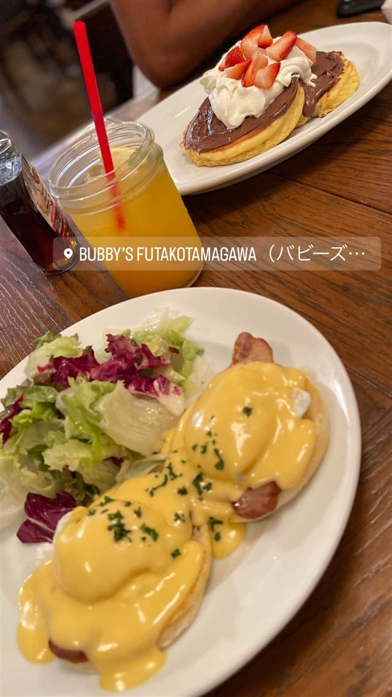

Bubby's 二子玉川
感謝祭に1日だけ開いたパイ屋が起源のエッグベネディクト
BUBBY'S FUTAKOTAMAGAWA（バビーズ…
Bubby'sは1990年にニューヨーク・トライベッカで開いたパイ専門店を原点とするアメリカンレストラン。日本には2009年に上陸し、二子玉川店は2015年4月開業の国内5号店として、エッグベネディクトなどのブランチメニューを提供している。
TRIVIA
豆知識
- 1990年の感謝祭に近隣住民向けに1日だけ開いたパイ屋が好評で、3週間営業に延び、そのまま常設店になった。
- 元は20席のパイ専門店が、100席規模のアメリカ料理店に成長した。
REVIEWS
世間の評判
3.39食べログ
肉厚バーガーとアメリカンなパイ
- 肉厚でジューシーなハンバーガーのボリュームの多さを評価する声が多い
- アップルパイやチェリーパイなどアメリカンなデザートを評価する意見が目立つ
- 味が薄く物足りないという意見や、提供に30分ほどかかるという指摘もある
食べログ 口コミ501件
| 創業 | 1990年創業（米ニューヨーク）／日本上陸2009年、二子玉川店は2015年4月24日開業 |
|---|---|
| 系譜 | 米ニューヨーク・トライベッカ発のパイ専門店が原点で、日本ではバビーズジャパンが展開。二子玉川店は日本5号店。 |
| 看板 | エッグベネディクト、自家製パイ・パンケーキなどアメリカンブランチ料理 |
| どこから | 23区の外れ・近郊 |
| 営業時間 | 月〜土 10:00-22:00 日 10:00-22:00、10:00-16:00、16:00-22:00 |
| 予算 | 昼 ¥1,000～¥1,999 夜 ¥2,000～¥2,999 |
| 定休日 | 不定休（施設に準ずる） |
| 場所 | 二子玉川 東京都世田谷区玉川1-14-1 二子玉川ライズ |
| メモ | 二子玉川ライズ内に立地するブランチ・カフェレストラン。 |
食べたもの：エッグベネディクト